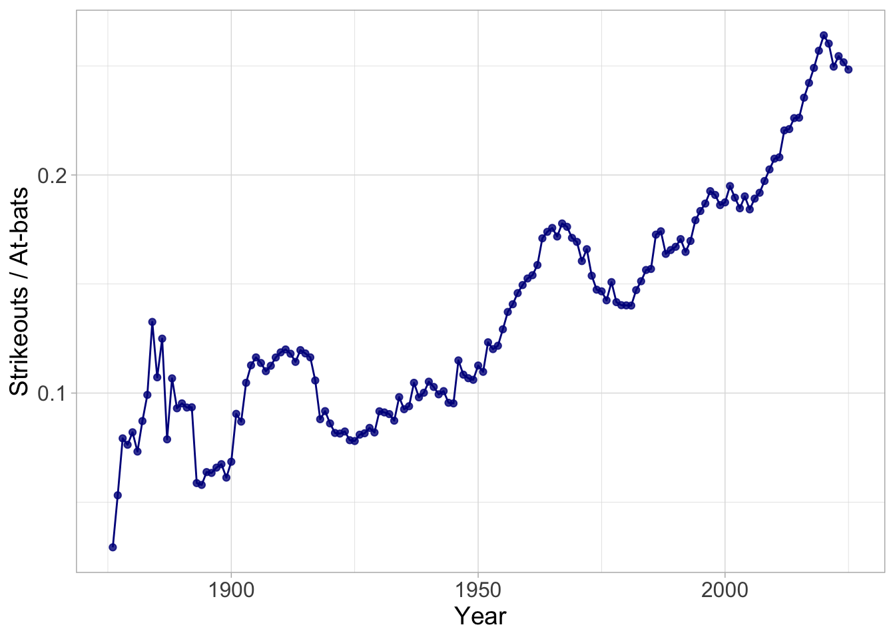

Presentations
Timeline
EDA project presentation
6-min presentation on Tuesday, June 16 (during lab)
Aim for 5 min + 1ish min for Q&A
Make sure you do not exceed 6 min (practice and time yourself)
We’ll (probably) cut you off if you exceed 6 min!!
Capstone project presentation (a preview)
1-2 presentation checkpoints (both during lab time, dates TBD)
1 final presentation on the final day (July 24) (+ other deliverables)
Details will be provided soon
Presentation tips
Begin with background and motivation
Every presentation has a story:
What is the motivation? Why should people care about your work?
You want to build up what your work is trying to address
. . .
Example: Professor Yurko’s nflWAR talk at NESSIS 2017:
Do NOT begin with: “We’re introducing [project topic]” (e.g. WAR for NFL)
Instead begin with current state of NFL analytics and need for better, reproducible player level-metrics
. . .
Do NOT include an outline slide!
- Your presentation should flow naturally
Describing the data
You want to provide a general overview of your dataset:
- What are your observations? i.e., what does each row of your dataset represent?
. . .
What are the relevant variables/features? i.e., what are the columns of interest?
Be careful with many variables - avoid just listing everything!
Simplify by describing groups of variables together
. . .
Use examples - makes your data explicit and concrete for the audience
Introducing and describing methods
Prior to presenting results, clearly state any transformations and methods used in the analysis
Your presentation should provide the general steps for someone to replicate your work
E.g., Used complete-linkage hierarchical clustering with [INSERT VARIABLES], determined \(k\) number of clusters by [INSERT REASON]
E.g., Modeled [INSERT RESPONSE VARIABLE] as a function of [INSERT EXPLANATORY VARIABLES]
. . .
For more complicated methods, you’ll want to provide a brief review of the methodology
- Know your audience! For EDA presentations, let’s say the audience are coaches in your respective sport
If introducing new methodology: walk through the steps clearly
. . .
Always justify your choice of methodology
- Why you used a flexible tree-based model over linear regression (only mention other methods that you seriously considered)
Presenting results
Use the assertion-evidence model
Assertion: title of the slide should be the key takeaway in brief sentence form
- Indicates the point of the visualization, table, etc. used to display the results
Evidence: the body of the slide containing the results
- Display of the results in some format that is simple to explain and understand
. . .
Limit the amount of text in your Evidence portion – brief statements with important context
Treat the Assertion as the title of your Evidence
- Plot titles are then redundant and not necessary with an effective assertion
Assertion
Evidence
(e.g., plots, animations, tables, etc.)
MLB strikeout rates have been increasing throughout history
(Explain the elements of your graph - what is each axis, color, shape, etc referring to? And what is the unit scale?)
Discussion (and ending a presentation)
- Conclude with a recap of the main points of your work
. . .
- Then point out limitations and indicate future directions
. . .
Either end with the Discussion slide (or Acknowledgements but this is sometimes placed at the beginning)
Never end a presentation with lone Thank you slide!
Either want the audience to focus on the final points in your Discussion slide
Or show a plot that stood out from your presentation (pretty picture!)
. . .
- Include back-up Appendix slides with additional info, ready for questions
. . .
Slides for References should not be displayed during your talk
Their purpose is just for sharing with others
Alternative: include references directly on slides either in text or via footnotes1
Communicating effectively
Use pauses effectively to highlight points and explain steps
. . .
- Showing all of your text at once can overwhelm your audience
. . .
But
. . .
don’t
. . .
be
. . .
ridiculous
. . .
Remember: memory overload is real!
Do NOT introduce too much notation at once
Repetitive language and usage of words are useful and reminders for the audience
- Use consistent language and terminology throughout the talk
. . .
Know your audience!
Slide design tips
Less ink, less ink, less ink
Your plot should be big enough (line width, point size, etc.)
- This includes text on plots!
Never have only one bullet point on a slide
Reformat variable names (don’t show the original names in the data)
Use an appropriate amount of decimal places
Use slide numbers
If a table can be represented by a figure, turn it into a figure (e.g., comparison of model evaluation metrics)
Make sure your figures and charts, etc. all display the correct size. If we can’t see the legend or the axes, the plot is not useful
More general tips
Your slides should support what you say, not create interference between speech and vision brain areas
- Your slides serves as a summary of what you said so someone who may have been distracted can catch up quickly.
Do not create your talk at the last minute (it will be obvious if you do). Designing good slides takes time. Practicing a talk takes time.
Pick better (than default) colors for your plots. Your submission should look expensive.
Practice good body language (eye contact, don’t read off slides, minimize distracting movements)
It’s okay to be nervous! Practice and repetition helps
Do it live: presentation critique
Do it live: making presentations with Quarto
Resources to follow along
Quarto presentation:
quarto.org/docs/presentationsrevealjs:quarto.org/docs/presentations/revealjs
Footnotes
Like this…↩︎